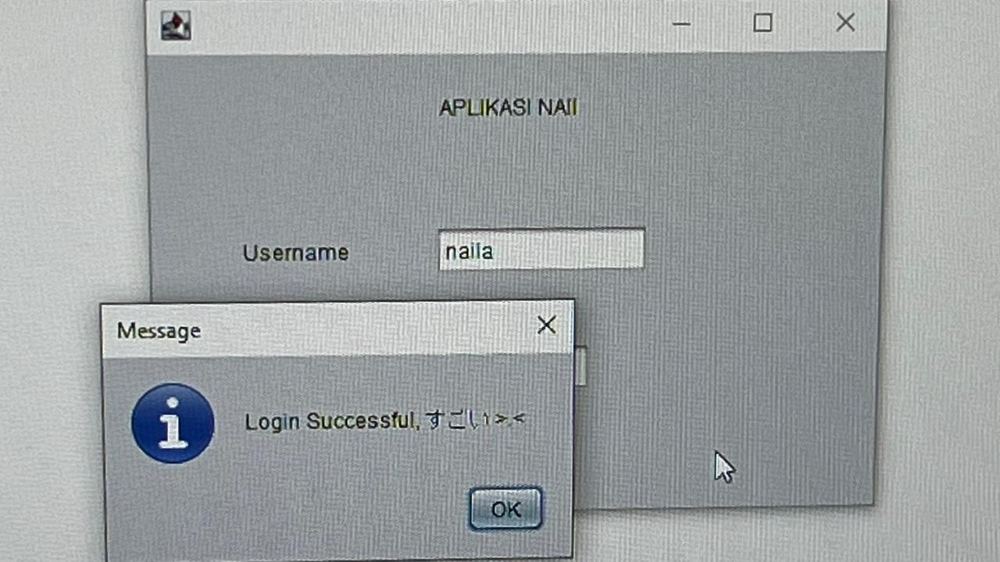
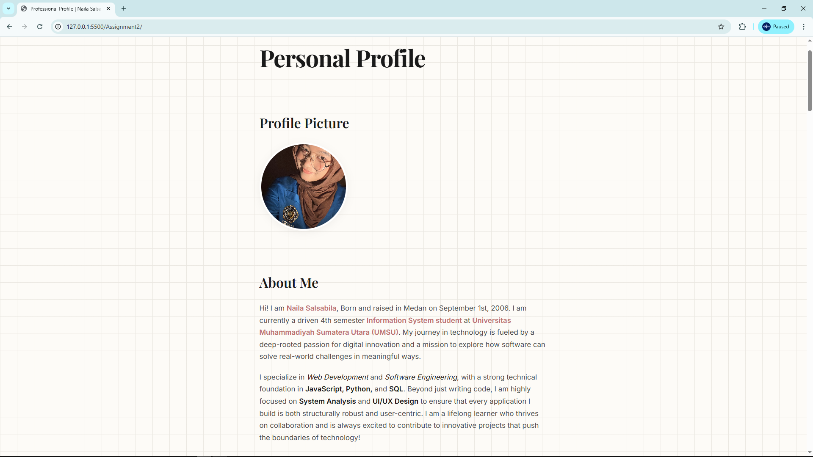
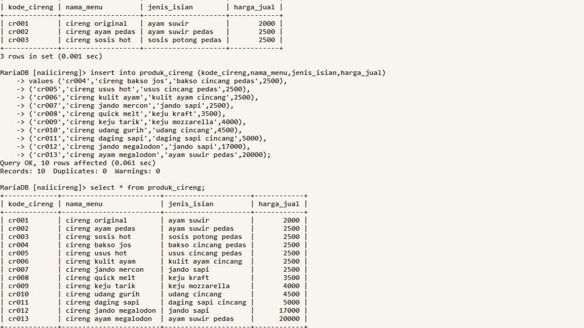
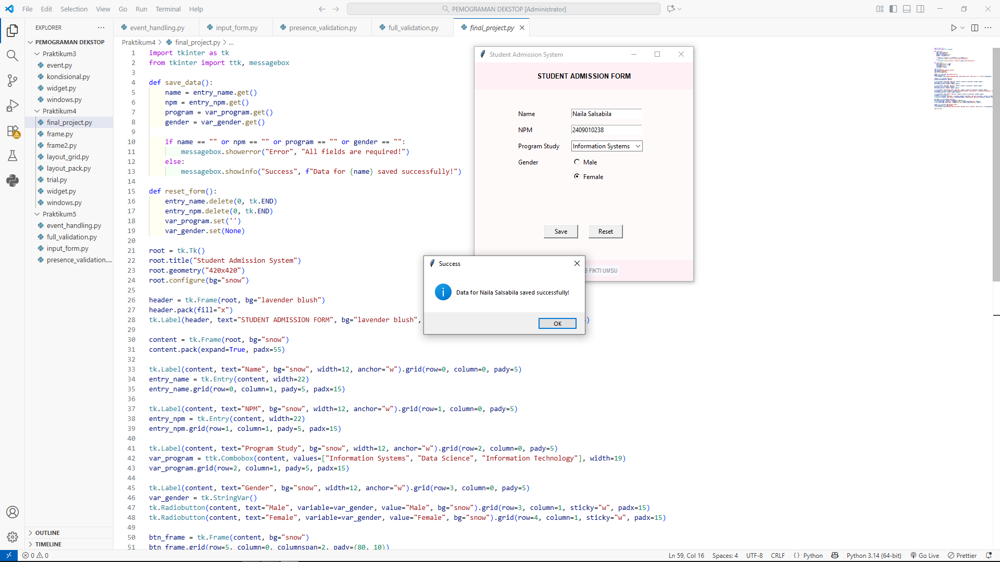
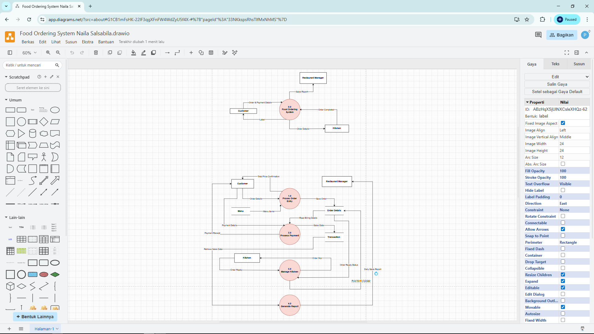
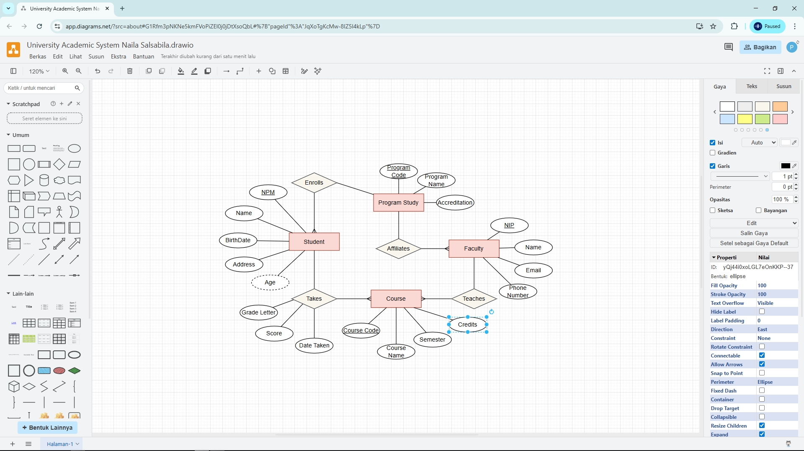
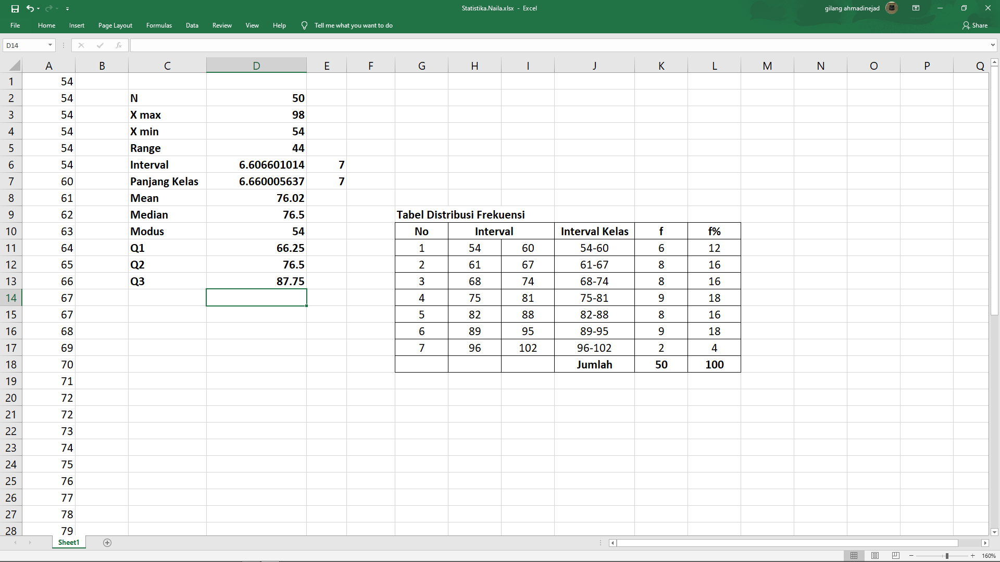
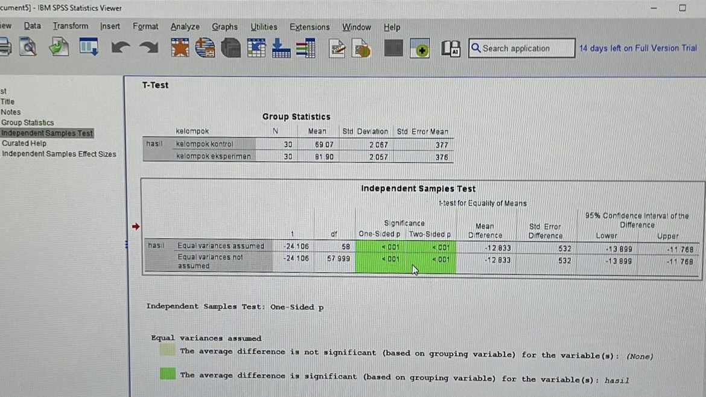

Hi, I'm Naila.
Beyond the Interface.
INFORMATION SYSTEMS STUDENT — WEB DEVELOPER
I am an Information Systems student driven by digital innovation. Combining System Analysis with UI/UX Design, I craft web applications that are both structurally robust and highly intuitive.

TRUST YOUR LOGIC AND KEEP BUILDING
TRUST YOUR LOGIC AND KEEP BUILDING
TRUST YOUR LOGIC AND KEEP BUILDING
TRUST YOUR LOGIC AND KEEP BUILDING
TRUST YOUR LOGIC AND KEEP BUILDING
TRUST YOUR LOGIC AND KEEP BUILDING
My Toolkit
Development
- VSCode & Netbeans
- Python & JavaScript
- HTML5 & CSS3
- SQL (MySQL)
Analysis & Design
- UI/UX Design Tools
- UML / ERD Modeling
- System Analysis
- IBM SPSS
Workflow & OS
- Git / GitHub
- Linux Environment
- Microsoft Excel
- Canva
Featured Projects

Java Desktop App
NetBeans & MySQL

Website Portfolio
HTML & CSS

Product Database
MySQL & MariaDB

Student Admission Form
Python & Tkinter

Food Ordering DFD
System Analysis (draw.io)

University Academic ERD
Data Architecture (draw.io)

Excel Data Analysis
Microsoft Excel

SPSS Data Analysis
IBM SPSS